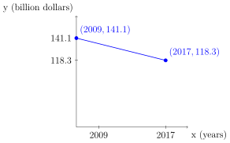

Section 2.4 - Linear Functions#
Definition 12
A function \(f\) is a linear function if, for real numbers \(m\) and \(b\),
If \(a\ne0\), then the domain and the range of \(f\) are both \((-\infty,\infty)\).
If \(a=0,\)then we say \(f\) is the constant function and the domain is \((-\infty,\infty)\). The plot of the constant function is described as a horizontal line.
The standard form linear equation is
\[Ax+By=C\]where \(A,B,C\in\mathbb{Z}\) such that \(A\ge0\) and \(\text{gcf}(A,B,C)=1\).Two or more integers with a greatest common factor of one is called relatively prime. For example, 6 and 25 are not prime individually; however, 6 and 25 are relatively prime when considered together.
The slope \(m\) of the line through the point \((x_{1},y_{1})\) and \((x_{2},y_{2})\) is defined as follows
\[m=\dfrac{\Delta y}{\Delta x}=\dfrac{y_{2}-y_{1}}{x_{2}-x_{1}}\]where \(\Delta x\ne0\). The slope of the line constructed from \(y=mx+b\) is the change in \(y\) over the change in \(x\).Whenever \(\Delta x=0\) we say the line is vertical. This means the slope is undefined.
Whenever \(\Delta y=0\) while \(\Delta x\ne0\) we say the line is horizontal. The means the slope is zero.
Example 33
In 2009, the federal government spent $141.1 billion on research and development. In 2017, $118.3 billion was spent. Assuming a linear relationship, and find the average rate of change in the amount of money spend on R&D per year. Graph as a line segment, and interpret the result.
Solution:
If coordinates given is not obvious consider constructing a table of values. The two coordinates we have are \((x_{1},y_{1})=(2009,141.1)\) and \((x_{2},y_{2})=(2017,118.3)\). A linear relationship follows the model

It can be claimed that the change in R&D funding is not linear. A secant line can be used to approximate the rate of change of the curve over a change in \(x\) (or change in the horizontal axis).
Definition 13 (Secant Line)
Let \(f\) be a function defined over an interval \(I\) and \(x_{1},x_{2}\in I\). The average rate of change of a function from \(x_{1}\) to \(x_{2}\) is defined as
Definition 14 (Business Models)
Let \(p\) be the price variable and \(x\) be the number of units variable. We denote the cost function \(C(x)\). We define the revenue function as
Example 34
Assume that the cost to produce an item is a linear function and that all items produced are sold. The fixed cost is $1500, the variable cost per item is $100, and the item sells for $125.
Find the cost function.
Find the revenue function.
Find the profit function.
According to the profit function, what happens if zero units are sold, and will the company make a profit?
Solution:
Since it costs $100 to produce each unit and there is a fixed cost of $1500 we can define the cost function as
Note, that \(P(0)=-1500\) which means that if zero units are sold then the profit would be \(-\$1500\) (a loss of 1500 dollars).
Note, that \(P(x)>0\) is when the company will make a profit.